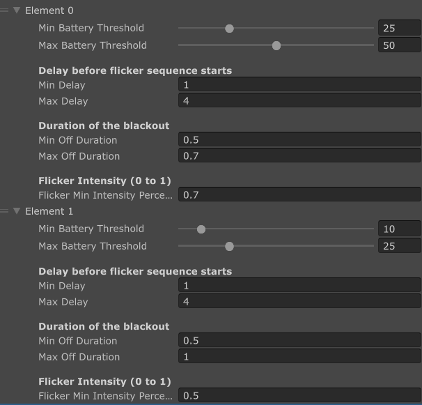
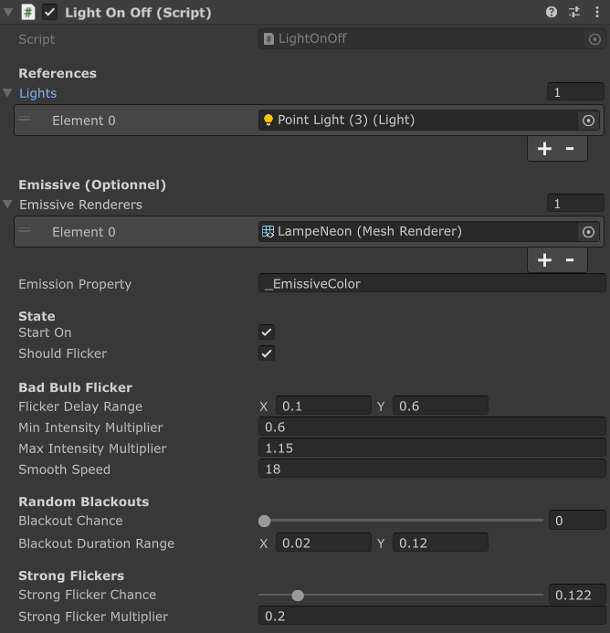
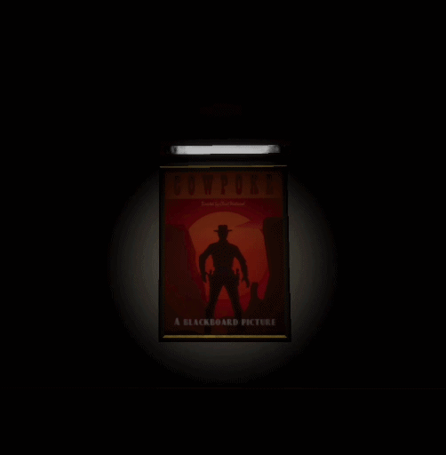

C# Systems • Gameplay Integration
Scripts
This section presents the scripts I worked on. I mainly assisted our programmer, Maxime, in the development of several scripts. On my side, I created the Flashlight Battery script as well as the Light On/Off script, which controls turning the flashlight on and off.
Flashlight Battery & Energy Management System
This script manages the entire energy lifecycle of the flashlight. Beyond simple value management (0-100%), the system utilizes Coroutines and custom data structures to couple gameplay mechanics with intuitive visual feedback.
1. Dynamic Flickering System
To avoid a cluttered interface, the battery status is communicated via unstable light behavior. The script uses an array of FlickerSettings configurable via the Inspector, allowing distinct behaviors to be defined for different battery thresholds.

private void CheckForRandomFlicker() {
foreach (var config in _flickerConfigs) {
if (currentBattery > config.minBatteryThreshold && currentBattery <= config.maxBatteryThreshold) {
StartCoroutine(FlickerRoutine(config));
return;
}
}
}
private IEnumerator FlickerRoutine(FlickerSettings settings) {
_isFlickering = true;
yield return new WaitForSeconds(Random.Range(settings.minDelay, settings.maxDelay));
// Random flickering sequence
int flickers = Random.Range(3, 6);
for (int i = 0; i < flickers; i++) {
SetLightIntensity(Random.Range(settings.flickerMinIntensityPercent, 0.4f));
yield return new WaitForSeconds(Random.Range(0.05f, 0.15f));
SetLightIntensity(1.0f);
yield return new WaitForSeconds(Random.Range(0.05f, 0.1f));
}
_isFlickering = false;
}
2. Recharge Mechanic (ReloadBattery)
The ReloadBattery() method uses state logic to manage progress. It checks if the player has just initiated charging, dynamically adjusts light intensity, and enables the FlashBang once specific thresholds are reached.
public void ReloadBattery() {
if (!_isReloading && currentBattery < _maxBattery) {
_isReloading = true;
startCharginMetalLoopAudioSource.Play();
if (_noiseEmitter != null) _noiseEmitter.PlayNoiseWithDelay(2.3f);
}
if (currentBattery < _maxBattery) {
currentBattery += _batteryGainPerSecond * Time.deltaTime;
if (currentBattery >= reloadMinimumForFlashBang) player.canFlashBang = true;
}
if (currentBattery >= _maxBattery) {
currentBattery = _maxBattery;
if (!_wasFullyCharged) {
_wasFullyCharged = true;
fullyChargedAudioSource.Play();
}
}
}
Light On/Off & Bad Bulb Flicker System
This script controls whether lights are on or off, while also adding a bad bulb flicker effect. It affects both real Unity lights and emissive materials, so the visual result stays consistent.

Inspector setup showing lights, emissive renderers, flicker values and blackout settings.
1. Light State Management
The script stores the original intensity of each light at startup. When the light is turned off, all intensities are set to 0. When turned back on, the script restores the light behavior and allows flickering again.
public void TurnOn() {
_isOn = true;
_nextFlickerTime = 0f;
}
public void TurnOff() {
_isOn = false;
ApplyIntensity(0f);
}
public void ToggleLight() {
if (_isOn) TurnOff();
else TurnOn();
}2. Bad Bulb Flicker
The flicker is randomized using delay ranges, intensity multipliers, blackouts and strong flickers. This creates an unstable light effect, useful for horror or abandoned environments.
private void ChooseNextFlicker() {
_nextFlickerTime = Time.time + Random.Range(flickerDelayRange.x, flickerDelayRange.y);
if (Random.value < blackoutChance) {
_blackoutEndTime = Time.time + Random.Range(blackoutDurationRange.x, blackoutDurationRange.y);
_targetMultiplier = 0f;
return;
}
if (Random.value < strongFlickerChance) {
_targetMultiplier = strongFlickerMultiplier;
return;
}
_targetMultiplier = Random.Range(minIntensityMultiplier, maxIntensityMultiplier);
}3. Emissive Material Synchronization
The script also updates emissive materials with MaterialPropertyBlock. This avoids modifying the shared material directly and keeps the mesh glow synchronized with the light intensity.
Color targetColor = _baseEmissiveColors[i] * multiplier;
_currentEmissiveColors[i] = Color.Lerp(
_currentEmissiveColors[i],
targetColor,
lerpFactor
);
emissiveRenderers[i].GetPropertyBlock(_propBlock);
_propBlock.SetColor(_emissivePropID, _currentEmissiveColors[i]);
emissiveRenderers[i].SetPropertyBlock(_propBlock);
Final in-game result showing the light turning on/off, random flickering, blackouts and emissive synchronization.
Monster Shadow Patrol & Projector Reveal System
This system was designed to maintain tension inside the cinema room. Although the real monster cannot physically enter this area, a projected shadow and distant screams create the illusion that the creature is still nearby, preventing the player from feeling completely safe.

Inspector setup with random destination points, movement speed, scream timing, animator reference and scream audio.
1. Random Patrol Movement
The shadow monster moves between several destination points placed in the scene. Each time it reaches a point, the script randomly selects a new destination, making the movement less predictable.
This unpredictability prevents players from learning a fixed pattern and helps the shadow feel like a living presence rather than a scripted loop.
void ChooseRandomNextPoint()
{
if (destinationPoints.Length <= 1) return;
int newIndex = currentIndex;
while (newIndex == currentIndex)
{
newIndex = Random.Range(0, destinationPoints.Length);
}
currentIndex = newIndex;
}2. Random Scream Timing
After a random delay, the monster stops moving and triggers a scream animation. During this short pause, the system reinforces the illusion that the creature is actively searching or reacting near the cinema room.
The scream timing is randomized between a minimum and maximum value, which creates unpredictable moments of tension for the player.
IEnumerator ScreamRoutine()
{
isScreaming = true;
animator.SetTrigger("Scream");
yield return new WaitForSeconds(screamDuration);
timer = 0f;
CalculateNextScreamTime();
isScreaming = false;
}
void CalculateNextScreamTime()
{
timeUntilNextScream = Random.Range(
minTimeBetweenScreams,
maxTimeBetweenScreams
);
}3. Audio Feedback
The scream sound is played through an AudioSource attached to the shadow monster. This adds spatial feedback to the projected silhouette and makes the event feel more present in the room.
public void PlayScreamSound()
{
PlayRandom(audioSource, new AudioClip[] { screamSound });
}
private void PlayRandom(AudioSource source, AudioClip[] clips)
{
if (source == null || clips == null || clips.Length == 0)
return;
AudioClip clip = clips[Random.Range(0, clips.Length)];
if (clip != null)
source.PlayOneShot(clip);
}4. Projector Activation
The projector activation system was implemented by our programmer, Maxime. The TurnOnProjector() method is triggered through a UnityEvent and progressively increases the HDRP spotlight intensity while introducing random flickering.
This creates the impression of an old cinema projector struggling to start before stabilizing, helping the shadow reveal feel more cinematic.
public void TurnOnProjector()
{
if (parentObject != null)
{
parentObject.SetActive(true);
}
StopAllCoroutines();
StartCoroutine(TurnOnRoutine());
}
Projector setup: HDRP target intensity, turn-on duration, flicker speed and flicker variance.

Prototype test: the projector turns on and reveals the monster shadow moving on the cinema wall.
Portfolio Summary
This system combines AI presentation, animation, audio cues and lighting to create environmental storytelling without directly exposing the monster to the player. The projected shadow acts as a psychological threat, maintaining tension even in a location where the enemy cannot physically appear.
While the final projection effect remained at a prototype stage, it successfully demonstrated the intended gameplay goal: preserving uncertainty and preventing the player from considering the cinema room as a completely safe area. With additional production time, the projection quality, shadow readability and cinematic reveal timing could have been further refined.